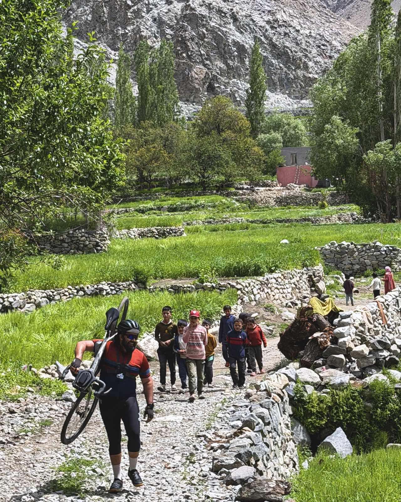
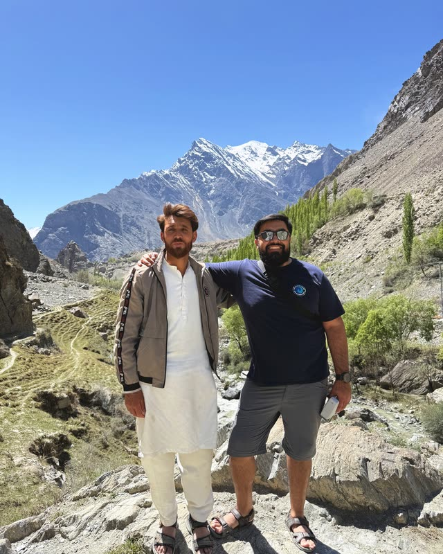
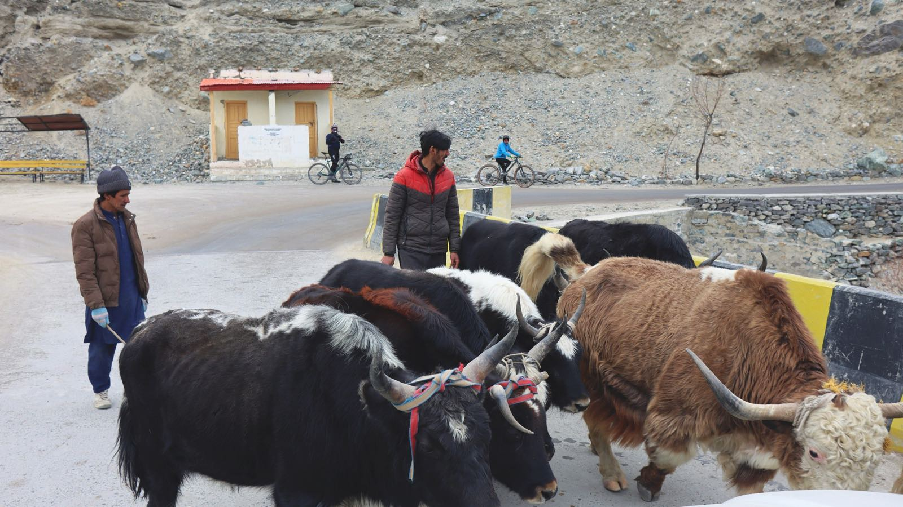
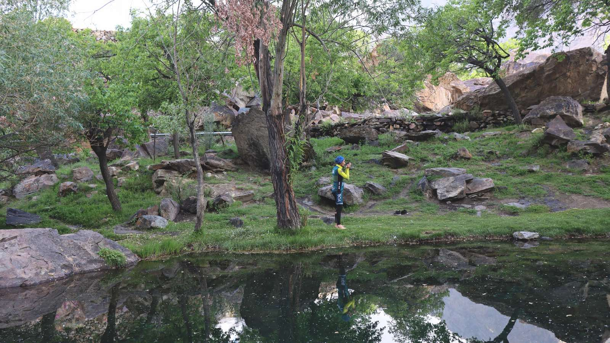

Bikes brought us here. These are the ones who make us stay.
Ride through Shigar and Kharmang and you arrive alone but leave with an escort. The kids of these villages are our loudest cheering section, our most honest critics, and — whenever the Prado is parked — our keenest passengers.
Before the fleet, the plan or even the name, there was Ather Sildi — the friend who introduced Numaan to Hassnain. No Ather, no Cycling Markhor. It's that simple.

The committee isn't only human. A cat at Khamosh waterfall has adopted every cyclist who stops. Yaks own the road in Shigar; sheep and duck convoys own it everywhere else. House rule: always yield to the yak.

Faith is part of the fabric of life in Baltistan, and part of ours. Some rides pause — beside a spring, on a quiet road — and the mountains wait with us.
